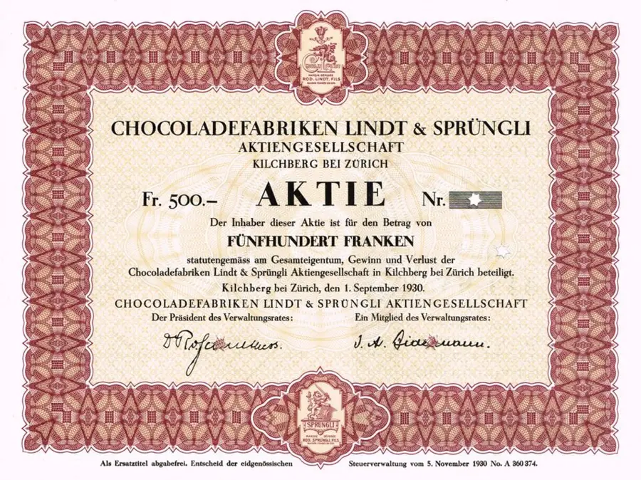

대표 로고대표 브랜드 마크
대표 로고대표 브랜드 마크린트 & 슈프륀글리 Lindt & Sprüngli
린트 & 슈프륀글리(Lindt & Sprüngli)는 스위스 킬히베르크에 본사를 둔 초콜릿 회사이다. 1845년 취리히의 제과점에서 시작해 세계 각지에 판매본부를 둔 다국적기업으로 성장했다.
최종 업데이트
린트 & 슈프륀글리는 어떤 브랜드인가
스위스의 초콜릿 회사로, 킬히베르크에 본사를 두고 세계 각지에 판매본부를 운영하는 다국적기업이다. 로돌프 린트가 개발한 콘칭 기법으로 부드럽게 녹는 식감의 초콜릿을 만들며, 대표 제품으로 엑설런스, 린도르, 골드 버니가 있다.
지주회사 아래 본사와 자회사들이 그룹경영 체제로 운영된다. 스위스, 독일, 프랑스, 이탈리아, 미국, 오스트리아에는 제조회사를, 영국, 홍콩, 스페인, 폴란드, 캐나다, 스웨덴, 오스트레일리아, 멕시코, 체코에는 판매와 유통회사를 두고 있다.
기라델리, 카파렐, 큐퍼레, 호프바우어 등의 브랜드도 그룹에 속한다. 한국에서는 농심이 직접 수입해 유통과 판매를 담당한다.
린트 & 슈프륀글리는 어떻게 시작되고 성장했나
1845년 스위스 취리히 시장통의 작은 제과점에서 과자 제조인 데이비드 슈프륀글리와 아들 루돌프 슈프륀글리가 초콜릿을 만들기 시작했다. 1870년 베르트뮐레에 초콜릿 공장을 지었고, 약 십 년 후에는 초콜릿과 프랄린을 유럽 여러 국가와 인도에까지 수출했다.
1898년 요한 루돌프가 킬히베르크에 새 공장을 지었고, 1899년 회사명을 쇼콜라 슈프륀글리로 바꾼 뒤 로돌프 린트로부터 베른의 초콜릿 공장을 인수했다. 린트가 1879년에 개발한 콘치 기계가 부드러운 식감과 좋은 향을 만들어냈고, 이 기법으로 회사는 더욱 성장했다.
린트 & 슈프륀글리의 브랜드 아이덴티티는 무엇인가
로돌프 린트의 콘칭 기법과 슈프륀글리의 제과 사업이 1899년 합쳐져 만들어진 스위스 초콜릿 회사이다. 린도르와 엑설런스를 대표 제품으로 둔다.
린트 & 슈프륀글리의 대표 제품과 서비스는 무엇인가
엑설런스는 린트가 개발한 콘칭 기법으로 만드는 다크 초콜릿 바로, 일부 제품은 72시간의 콘칭 과정을 거친다. 린도르는 부드러운 초콜릿 크림이 들어간 제품으로 1949년 마스터 쇼콜라티에들이 제작했고, 1967년 크리스마스 에디션으로 볼 모양이 출시되었다.
린도르는 대표상품으로 100개 이상의 나라에서 판매되며, 맛은 각각 고유한 색깔의 포장지로 구분된다. 골드 버니는 부활절 무렵 판매하는, 빨간 리본과 방울을 단 금박 포장의 토끼 모양 초콜릿이다.
린트 & 슈프륀글리는 지금 어떤 상태인가
1994년 호프바우어, 1997년 카파렐, 1998년 기라델리 초콜릿 컴퍼니를 인수하며 그룹을 확장했다. 킬히베르크에 본사를 둔 다국적기업으로, 지주회사 아래 본사와 자회사들이 그룹경영된다.
스위스, 독일, 프랑스, 이탈리아, 미국, 오스트리아에 제조회사를 두고 두바이와 아일랜드에는 영업부를 둔다. 한국에서는 농심이 직접 수입해 유통과 판매를 맡는다.
린트 & 슈프륀글리 로고는 어떻게 변해왔나
대표 로고대표 브랜드 마크사진으로 보는 린트 & 슈프륀글리의 역사

자주 묻는 질문
린트 & 슈프륀글리는 어느 나라 브랜드인가요?
린트 & 슈프륀글리는 스위스의 식음료 브랜드입니다.
린트 & 슈프륀글리는 언제 설립되었나요?
린트 & 슈프륀글리는 1845년 설립되었습니다.
린트 & 슈프륀글리의 브랜드 아이덴티티는 무엇인가요?
로돌프 린트의 콘칭 기법과 슈프륀글리의 제과 사업이 1899년 합쳐져 만들어진 스위스 초콜릿 회사이다.
린트 & 슈프륀글리의 대표 제품은 무엇인가요?
엑설런스는 린트가 개발한 콘칭 기법으로 만드는 다크 초콜릿 바로, 일부 제품은 72시간의 콘칭 과정을 거친다.
린트 & 슈프륀글리는 어느 기업이 소유하고 있나요?
1994년 호프바우어, 1997년 카파렐, 1998년 기라델리 초콜릿 컴퍼니를 인수하며 그룹을 확장했다.
린트 & 슈프륀글리의 창업자는 누구인가요?
린트 & 슈프륀글리의 창업자는 Rodolphe Lindt입니다(위키데이터 기준).
린트 & 슈프륀글리의 본사는 어디에 있나요?
린트 & 슈프륀글리의 본사는 킬히베르크에 있습니다(위키데이터 기준).
출처와 검증
린트 & 슈프륀글리 관련 참고: 공식 웹사이트 · 위키데이터 Q152822 · 한국어 위키백과 · 영어 위키백과. 브랜드명은 한글과 원어를 함께 표기하되 데이터에 없는 표기는 만들지 않습니다. 기원 국가·설립연도는 검수된 정의문에서 확인된 값을 우선하고, 없을 때만 공식 웹사이트 URL이 일치하는 위키데이터 개체의 값을 씁니다. 위키데이터 값은 2026-11-11 기준입니다.